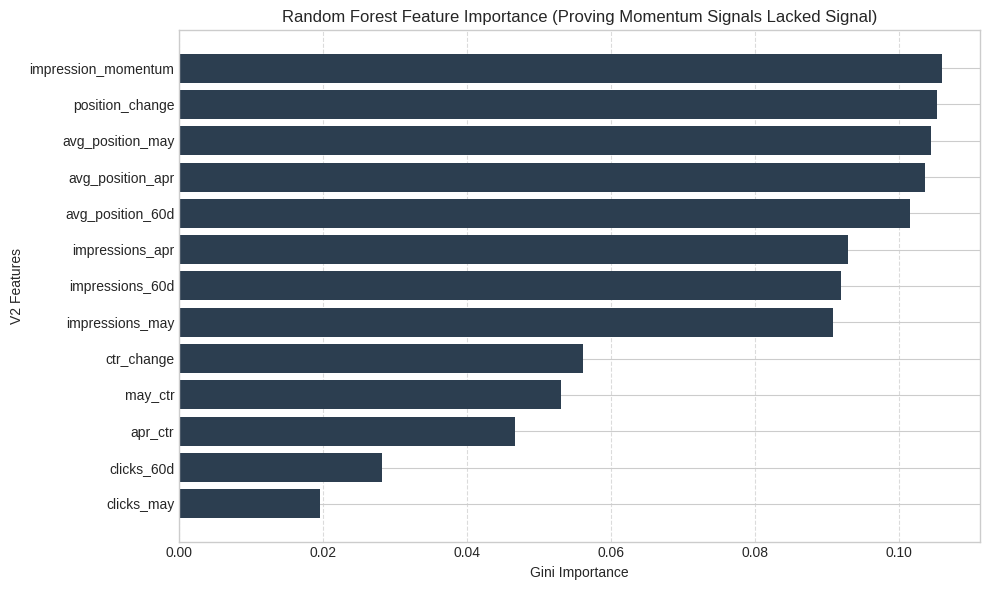
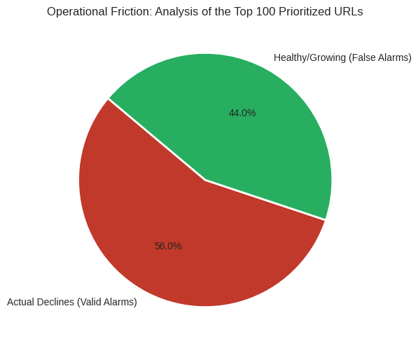

Comparative Evaluation of Predictive Machine Learning vs. Volumetric Risk Exposure for Multi-Tenant SEO Content Maintenance
Abstract
This study addresses the problem of identifying organic search performance declines across multi-tenant website architectures to support content maintenance prioritization.
Using the FlyRank dataset containing 78,835,655 daily performance records, we engineered temporal, volumetric, and engagement signals and evaluated a Random Forest classifier using a client-level holdout split.
The Random Forest achieved an F1 score of 0.7385, below the 0.7783 F1 score of an Always-Decline baseline on the same held-out test split.
The evaluated relative temporal features provided limited predictive separation in this validation design, while absolute traffic and position variables received greater importance within the model.
Based on these findings, we present an exposure-based prioritization queue as a transparent first-pass operational triage mechanism for human review rather than a replacement for diagnosis or expert judgment.
1. Introduction / Problem
Research Question
Given a period of historical SEO traffic signals (April and May 2026), can we predict whether a page's organic search visibility will undergo a significant decline (\(\le -20\%\) change in impressions) in the subsequent month (June 2026)? Furthermore, if a predictive machine learning model does not outperform a naive baseline, can we extract actionable risk-exposure metrics to construct a transparent, rule-based content prioritization framework?
Decision Supported
This work supports strategic content operations and search engine optimization (SEO) resource allocation. Specifically, it determines whether a content team should deploy an automated, predictive machine learning classifier or rely on a deterministic, volume-based risk-exposure queue to decide which URLs require immediate review, content refreshes, or technical audits.
2. Data
Dataset Overview
This analysis is built upon the public release of the FlyRank ML Internship Dataset. The study evaluates multi-client search and content performance signals distributed across core relational tables.
Relational Infrastructure & Scale
dim_clients: 104 client metadata rows mapping technical profile availability.dim_content: 519,606 tracked content assets.fact_daily: 78,835,655 daily SEO performance records.fact_query_90d: 2,414,248 query-level behavioral records.
Temporal Windows
- Historical Feature Window: April 1, 2026 – May 31, 2026 (\(60\text{ days}\)).
- Target Observation Window: June 1, 2026 – June 30, 2026 (\(30\text{ days}\)).
- Total Longitudinal Horizon: 520 unique observation dates (2025-01-27 to 2026-06-30) inside the underlying warehouse.
Public-Safety Exclusions & Guardrails
To enforce absolute data privacy and maintain a public-safe research baseline, the published paper excludes all sensitive details:
- Identifiable Attributes: Complete omission of real client corporate names, private domain names, private source URLs, and private search queries.
- Security Credentials: Complete omission of any access tokens, platform secrets, connection configurations, or platform credentials.
- Analytical Boundary: Exclusion of URLs generating fewer than 100 organic impressions during the \(60\text{-day}\) historical feature phase to eliminate extreme long-tail keyword volatility and data sparseness.
3. Methodology
Label Definition
The target variable \(Y \in \{0, 1\}\) represents the binary class state is_declining. It is mathematically formulated using the relative percentage change in organic search impressions between the historical base month (\(M_{\text{may}}\)) and the forward observation target month (\(M_{\text{june}}\)):
Feature Space Matrix
The finalized V2 feature space encompasses 13 operational metrics structured across three analytical groups:
- Absolute Base Volumetrics:
impressions_60d,clicks_60d,avg_position_60d,impressions_apr,impressions_may,clicks_may. - Temporal Momentum Signals:
impression_momentum,position_change. - User Engagement/Efficiency Ratios:
may_ctr,apr_ctr,ctr_change,avg_position_apr,avg_position_may.
Validation Design & Data Leakage Controls
- GroupShuffleSplit Holdout Evaluation: Simple random splitting violates independence assumptions in multi-tenant SEO structures because pages from the same client share systemic infrastructure, domain authorities, and market shocks. To guard against out-of-sample data leakage, a strict client-level holdout validation was executed via
GroupShuffleSplitwithtest_size = 20%. - Partition Topology: The training partition contains 118,433 rows across 38 unique clients, while the test evaluation partition holds 8,306 rows across 10 unique clients.
- Zero-Leakage Guardrail: The splitting mechanism verified exactly 0 client overlap between training and test sets, forcing models to evaluate on entirely unseen corporate ecosystems.
Naive Baseline Definition
The evaluation architecture implements an Always Decline Baseline (\(Y_{\text{pred}} = 1\) for every test observation). This naive heuristic reflects the class-prior baseline where approximately 63.71% of the held-out test observations are declining, establishing a functional benchmark for precision, recall, and \(F_1\text{-score}\) metrics.
4. Results
Model Performance vs. The Always-Decline Baseline
To evaluate the predictive power of the V2 feature set, a Random Forest Classifier was evaluated against the Always-Decline baseline on the exact same held-out client split.
The Random Forest did not provide overall predictive lift over the Always-Decline baseline on the held-out client split:
- Accuracy: Random Forest = 0.6188 vs. Baseline = 0.6371
- Precision: Random Forest = 0.6560 vs. Baseline = 0.6371
- Recall: Random Forest = 0.8449 vs. Baseline = 1.0000
- F1 Score: Random Forest = 0.7385 vs. Baseline = 0.7783
Although the Random Forest improved precision, it did not improve overall F1, recall, or accuracy relative to the naive baseline.
Table 1: Final Comparative Evaluation Matrix
| Model | Accuracy | Precision | Recall | F1 Score |
|---|---|---|---|---|
| Always Decline Baseline | 0.6371 | 0.6371 | 1.0000 | 0.7783 |
| Random Forest (V2 Features) | 0.6188 | 0.6560 | 0.8449 | 0.7385 |
Random Forest Feature Importance
The Random Forest assigned greater importance to absolute volume and position-related variables, while the evaluated relative temporal features received lower importance in this experiment.


5. Limitations & Honest Framing
Observational Nature & Causality
This analysis is observational and does not establish causality. Consequently, the statistical associations between base signals and June declines are correlative rather than causal. For example, observing that a change in Click-Through Rate (ctr_change) co-occurs with traffic decline does not imply that altering meta-descriptions to improve CTR will directly reverse an algorithmic search visibility shift.
Validation Scope & Time Horizon
The reported performance comes from a single held-out GroupShuffleSplit partition and should not be interpreted as a universal estimate of future production performance. Furthermore, the evaluation covers a relatively short April–June 2026 decision window, limiting conclusions about seasonality and long-term stability.
Feature Signal Limits
The evaluated relative temporal features (impression_momentum, position_change, ctr_change) provided limited predictive separation in this validation design. Rather than deploying an unsupported predictive model, this framework utilizes an exposure-based prioritization queue ranked by absolute traffic volume to protect high-visibility assets.
Trade-Offs of Volume-Based Prioritization
Sorting strictly by absolute traffic volume (impressions_may) introduces two specific operational trade-offs:
- Growth Alarms (False Positives): Pages with large volume that are accelerating or stable will still appear at the top of the queue, requiring routine review time despite healthy trajectories.
- Low-Volume Decay (False Negatives): Lower-traffic pages undergoing complete indexation or technical drops will rank near the bottom of the queue, which can mask localized technical issues.
6. Ranked Recommendations
Action Playbook: The Exposure-Based Queue
The evaluation found that the relative momentum features did not provide sufficient predictive separation to justify model-based prioritization in this experiment. Because the Random Forest did not provide sufficient predictive lift, we use absolute impression volume as a transparent first-pass risk-exposure queue for operational triage.
This queue is designed as a first-pass operational triage mechanism intended for human review, not an automated diagnosis system or a replacement for technical investigation.
Observed Outcomes in the Top 100 Queue
Among the top 100 pages ranked by May impressions, 56 were observed to decline in June and 44 were not.
Inspection of the Top 10 Assets
Inspection of the top 10 ranked pages illustrates the trade-off of the exposure-based approach: 6 of the 10 inspected pages were labeled as declining, while 4 were not. In particular, one page fell from 219,982 to 6,001 impressions, highlighting the operational significance of a severe traffic collapse on a high-exposure page.
Top 10 Action Queue Table
The table below shows the 10 highest-exposure pages ranked by
impressions_may. Identifying client and content hashes are
intentionally omitted from the public-facing artifact.
| Rank | May Impressions | June Impressions | Observed Change | Declining | Impression Momentum | Position Change |
|---|---|---|---|---|---|---|
| 1 | 595,532 | 591,696 | -0.6% | No | -0.254987 | 0.088137 |
| 2 | 353,426 | 292,416 | -17.3% | No | 9.332885 | -2.010891 |
| 3 | 280,892 | 171,606 | -38.9% | Yes | 0.955269 | 0.069185 |
| 4 | 249,023 | 585,712 | +135.2% | No | 0.580085 | -0.015002 |
| 5 | 235,817 | 169,233 | -28.2% | Yes | 0.549878 | 0.630214 |
| 6 | 226,091 | 48,447 | -78.6% | Yes | -0.066241 | 1.200175 |
| 7 | 219,982 | 6,001 | -97.3% | Yes | 3.709224 | -1.316375 |
| 8 | 205,089 | 212,758 | +3.7% | No | 0.057918 | 0.244574 |
| 9 | 202,315 | 81,577 | -59.7% | Yes | 0.164745 | -1.420143 |
| 10 | 195,384 | 133,757 | -31.5% | Yes | 0.147488 | 0.624407 |
7. Reproducibility
The analysis notebook and supporting artifacts used for this paper are available in the project repository:
- Project Repository: https://github.com/Sgln24/flyrank-ml-internship-w1
- Analysis Notebook:
work/notebooks/capstone.ipynb
Acknowledgments & Data Credit
Built on the FlyRank ML Internship dataset .
Appendix: ML-12 Career Deliverables
Employer-Facing Technical Summary
I evaluated whether a Random Forest could predict page-level SEO performance declines using historical traffic, position, and engagement signals, while enforcing client-level separation between training and test. On the held-out split, the model achieved an F1 score of 0.7385 versus 0.7783 for an Always-Decline baseline, so I avoided adding unsupported model complexity. I instead developed a transparent exposure-based prioritization queue for first-pass operational triage.
5-Minute Technical Demo Outline
- Hook (0:00 - 1:00): Show the Top 10 Action Queue and highlight the 219,982 → 6,001 decline, highlighting the operational significance of a severe traffic collapse on a high-exposure page.
- ML Reality Check (1:00 - 2:30): Explain that the Random Forest (F1: 0.7385) did not outperform the naive Always-Decline baseline (F1: 0.7783) on the held-out client split, as relative temporal signals provided limited separation.
- Engineering Pivot (2:30 - 4:00): Walk through the GroupShuffleSplit validation design, verifying client-level holdout integrity with zero client overlap.
- Bottom Line (4:00 - 5:00): Present the exposure-based queue as a transparent first-pass triage tool, addressing the trade-offs of false-positive reviews and quiet low-volume decay.
Social Post Cut
⇑ Focusing on transparent operational triage over unsupported model complexity.
For my capstone project in the FlyRank AI track, I evaluated whether a Random Forest classifier could forecast page-level organic search declines using 13 engineered traffic and engagement features.
On a strict client-level holdout split, the Random Forest achieved an F1 score of 0.7385, which did not outperform a naive Always-Decline baseline (F1: 0.7783). Relative temporal signals provided limited predictive separation in this evaluation, while absolute traffic variables drove model importance.
Instead of deploying an unsupported model, I formulated a transparent exposure-based prioritization queue for first-pass operational triage. When evaluating the top-exposure pages, the playbook surfaced several severe traffic declines among high-exposure pages for human review.
Full research write-up and notebook implementation are available on GitHub.
#MachineLearning #DataScience #SEO #DataEngineering